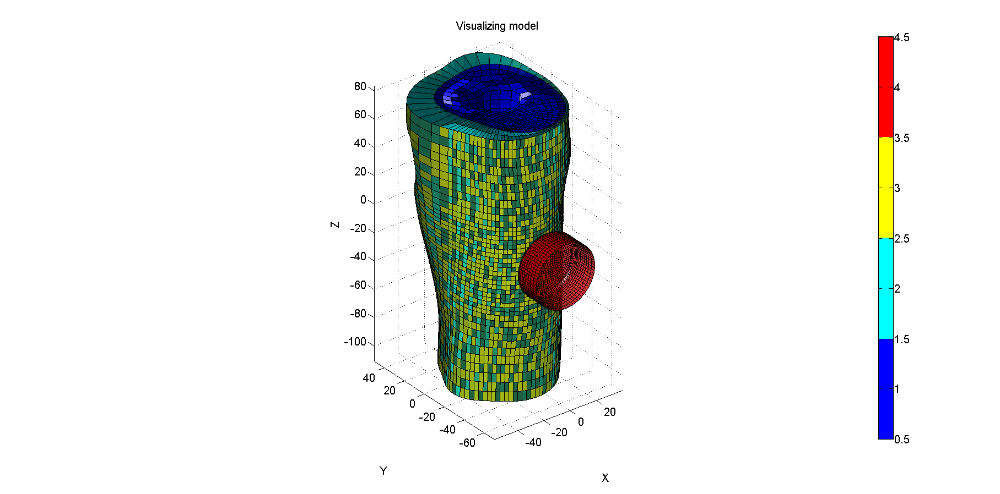

DEMO_import_FEB_export_INP
Below is a demonstration of how import a FEB file and subsequently export the geometry into an INP file.
Contents
clear; close all; clc;
Plot settings
fontSize=15; faceAlpha1=0.5; faceAlpha2=0.5; edgeColor=0.25*ones(1,3); edgeWidth=1.5; markerSize1=50;
Importing .feb file
%Set main folders defaultFolder = fileparts(mfilename('fullpath')); pathName_FEB=fullfile(defaultFolder,'data','FEB'); %Where to load the FEB file pathName_INP=fullfile(defaultFolder,'data','INP'); %Where to export the INP file febFileNamePart='example_HEX_QUAD.feb'; febFileName=fullfile(pathName_FEB,febFileNamePart); [febXML,nodeStruct,elementCell]=import_FEB(febFileName);
--- import_FEB --- IMPORTING .FEB XML ---> Getting nodes ---> Imported 25328 nodes ---> Getting elements ---> Imported 4536 quad4 elements ---> Imported 21252 hex8 elements DONE!
Plotting model
% Plotting the example model surfaces hf1=cFigure; title('Visualizing model','FontSize',fontSize); xlabel('X','FontSize',fontSize);ylabel('Y','FontSize',fontSize); zlabel('Z','FontSize',fontSize); hold on; uniqueMaterialIndices=[]; for q=1:1:numel(elementCell) uniqueMaterialIndices=unique([uniqueMaterialIndices(:); elementCell{q}.E_mat(:)]); switch elementCell{q}.E_type case {'tri3', 'quad4'} F=elementCell{q}.E; V=nodeStruct.N; C=elementCell{q}.E_mat; case {'hex8', 'tet4'} [F,C]=element2faces(elementCell{q}.E,elementCell{q}.E_mat); %Creates faces and colors (e.g. stress) for patch based plotting end hp=patch('Faces',F,'Vertices',V,'EdgeColor','k','FaceColor','flat','Cdata',C,'FaceAlpha',0.8); end colormap(jet(numel(uniqueMaterialIndices))); hc=colorbar; caxis([min(uniqueMaterialIndices)-0.5 max(uniqueMaterialIndices)+0.5]); axis equal; view(3); axis tight; grid on; set(gca,'FontSize',fontSize); camlight('headlight'); drawnow;
EXPORTING INP FILES FOR EACH ELEMENT TYPE
%You can change this example to do this for material type instead. Just use %the material indices to select the elements from the lists. However the %export_INP function can only handle 1 element type at a time at the moment for q=1:1:numel(elementCell) inpFileNamepart=[febFileNamePart(1:end-4),'_',num2str(q),'.inp']; %filename for inp file inpFileName=fullfile(pathName_INP,inpFileNamepart); elementStruct=elementCell{q}; %Setting appropriate element type line for ABAQUS. CHECK THESE! switch elementStruct.E_type case 'tri3' elementStruct.E_type='*ELEMENT, TYPE=STRI3, ELSET=PART-DEFAULT_1_EB1'; case 'quad4' elementStruct.E_type='*ELEMENT, TYPE=S4R, ELSET=PART-DEFAULT_1_EB1'; case 'tet4' elementStruct.E_type='*ELEMENT, TYPE=C3D4, ELSET=PART-DEFAULT_1_EB1'; case 'hex8' elementStruct.E_type='*ELEMENT, TYPE=C3D8R, ELSET=PART-DEFAULT_1_EB1'; end export_INP(elementStruct,nodeStruct,inpFileName); end
--- export_INP --- CREATING NODE AND ELEMENT TEXT FIELDS ---> Creating node text field ---> Creating element text field EXPORTING TO INP FILE... DONE! --- export_INP --- CREATING NODE AND ELEMENT TEXT FIELDS ---> Creating node text field ---> Creating element text field EXPORTING TO INP FILE... DONE!

GIBBON www.gibboncode.org
Kevin Mattheus Moerman, gibbon.toolbox@gmail.com